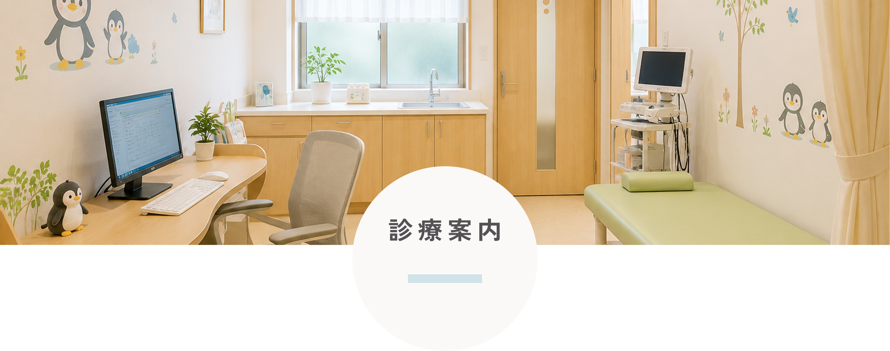
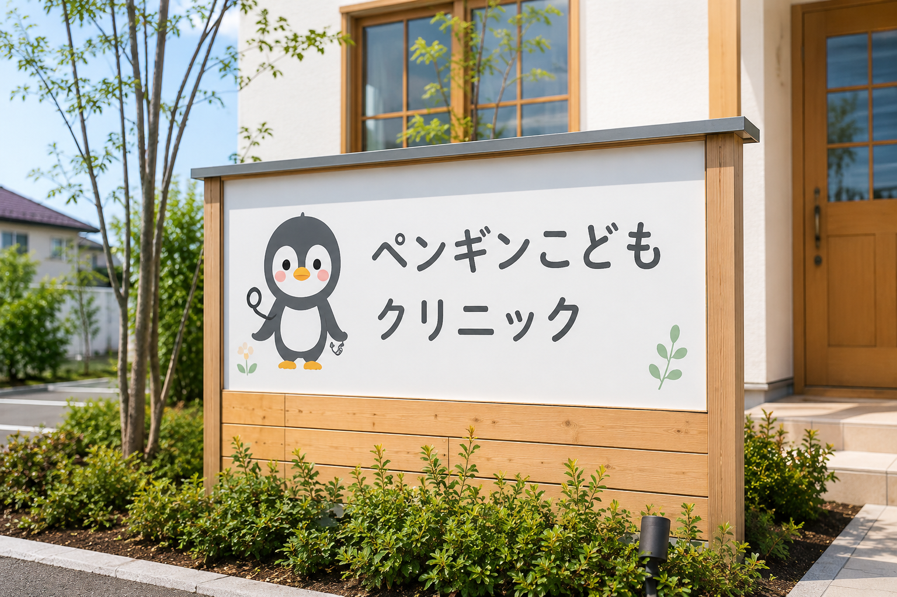
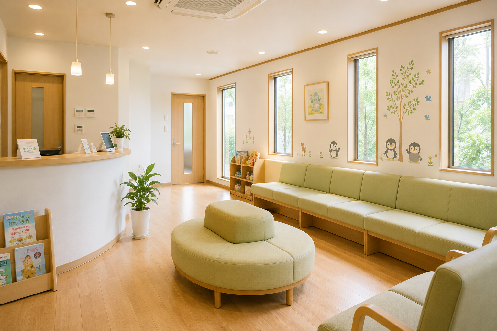

一般小児科
発熱・咳・鼻水・腹痛など、
お子さまの体調不良に幅広く対応します。
こんな時に受診してください
- 発熱・ふるえ
- 鼻水・鼻づまり
- 咳・のどの痛み・声枯れ
- 耳がいたい・中耳炎
- 嘔吐・下痢・腹痛
- 皮膚のしっしん・かゆみ
- アレルギー
・ぜんそく - 目やに・目の充血
- 頭痛
予防接種
各種ワクチンの接種を行います。
スケジュール管理もサポートします。
対応しているワクチン
| ワクチン名 | 時期の目安 | 種別 |
|---|---|---|
| ロタウイルス | 生後2ヶ月〜 | 定期 |
| ヒブ・小児肺炎球菌 | 生後2ヶ月〜 | 定期 |
| 四種混合（DPT-IPV） | 生後3ヶ月〜 | 定期 |
| BCG（結核） | 生後5ヶ月〜8ヶ月 | 定期 |
| MR（麻疹・風疹） | 1歳〜 | 定期 |
| 水痘・おたふくかぜ | 1歳〜 | 定期 |
| 日本脳炎 | 3歳〜 | 定期 |
| インフルエンザ | 毎年秋（生後6ヶ月〜） | 任意 |
※このほかにも各種ワクチンに対応しています。ご不明な点はお気軽にお問い合わせください。
予約接種をご希望の方へ
- 予防接種は予約制です
- 母子手帳を必ずご持参ください
- 体調がすぐれない場合は、接種を延期することがあります
乳幼児健診
お子さまの成長・発達を確認し、
育児のご相談にも対応します。
| 時期 | 主な確認内容 |
|---|---|
| 1ヶ月 健診 |
体重増加・黄疸・おへその 状態・授乳の様子など |
| 3〜4ヶ月 健診 |
首のすわり・視線の追従・ 体重増加の確認 |
| 6〜7ヶ月 健診 |
寝返り・離乳食の進み方・股関節の確認 |
| 9〜7ヶ月 健診 |
はいはい・指先の動き・人見知りの様子 |
| １歳 健診 |
歩行・発語・卒乳・偏食の有無など |
※自治体の健診と合わせて受診いただけます。タイミングについてはお気軽にご相談ください。
こんなご相談もどうぞ
- 離乳食の進め方
- 発達のペースが気になる
- 言葉が遅い気がする
- 体重が増えているか心配
- 便秘・下痢が続いている
- 夜泣きがつらい
- 授乳・ミルクの量
- グズリが多くて疲れた
-

-

-